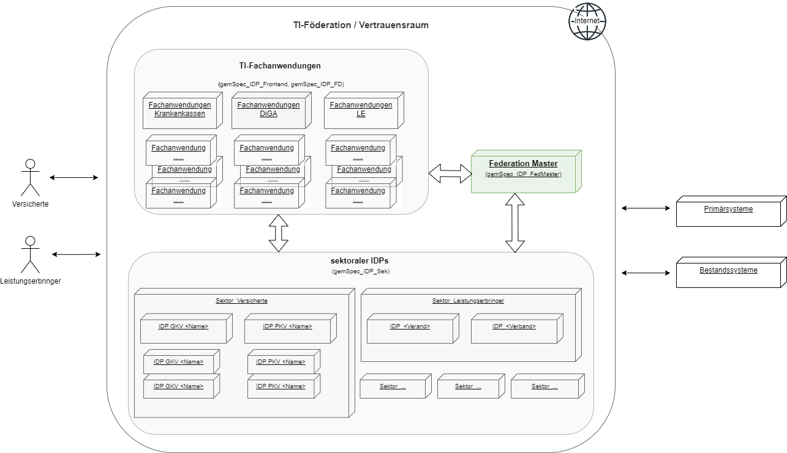
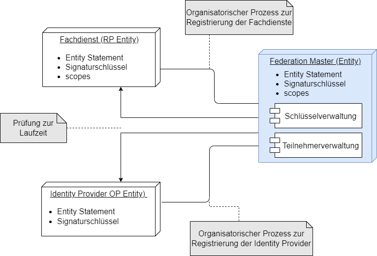
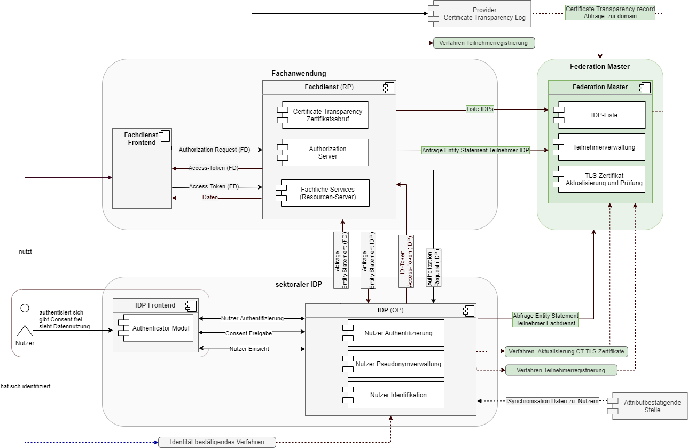
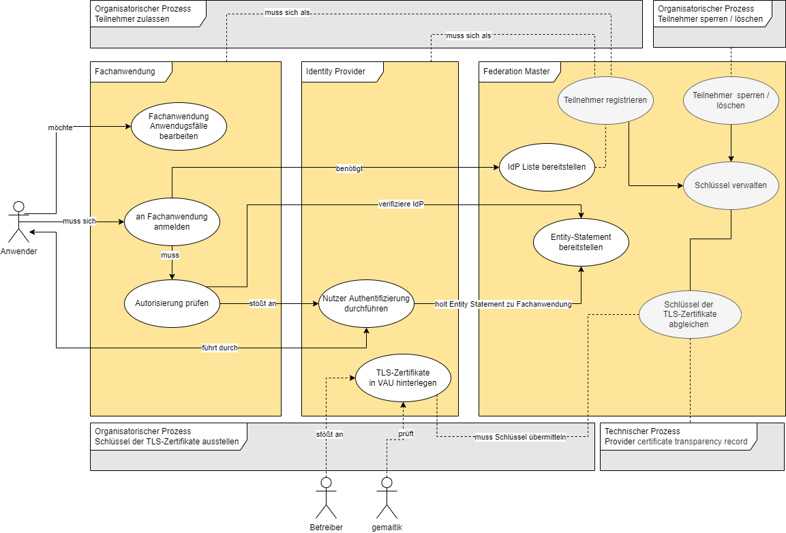
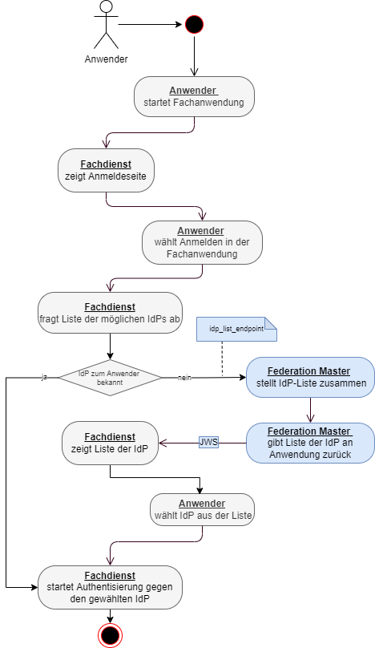
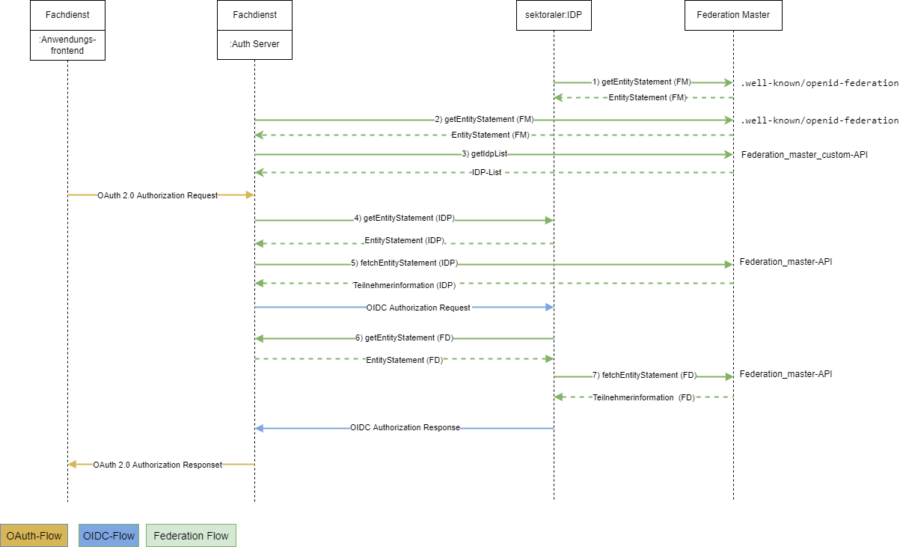

Elektronische Gesundheitskarte und Telematikinfrastruktur
Spezifikation
Federation Master
| Version | 1.0.0 |
| Revision | 567567 |
| Stand | 06.02.2023 |
| Status | freigegeben |
| Klassifizierung | öffentlich |
| Referenzierung | gemSpec_IDP_FedMaster |
Änderungen zur Vorversion
Anpassungen des vorliegenden Dokumentes im Vergleich zur Vorversion können Sie der nachfolgenden Tabelle entnehmen.
Dokumentenhistorie
| Version |
Stand |
Kap./ Seite |
Grund der Änderung, besondere Hinweise |
Bearbeitung |
|---|---|---|---|---|
| 1.0.0 | 06.02.23 | Einarbeitung Release FedMaster | gematik |
Die vorliegende Spezifikation definiert die Anforderungen zu Herstellung, Test und Betrieb des Produkttyps Federation Master. Der Federation Master basiert auf den Standards OpenID Connect (OIDC), Open Authorization 2.0 (OAuth 2) und JSON Web Token (JWT). Der Federation Master ist einerseits der Anker des Vertrauensbereichs der Föderation. Andererseits stellt der Federation Master Schnittstellen bereit, welche Auskunft über die in der Föderation registrierten sektoralen Identity Provider gibt. Die Kernaufgaben des Federation Master sind:
Das Dokument richtet sich an Hersteller und Anbieter, welche die Funktionen des Produkttyps Federation Master der gematik realisieren wollen.
Dieses Dokument enthält normative Festlegungen zur Telematikinfrastruktur (TI) des deutschen Gesundheitswesens. Der Gültigkeitszeitraum der vorliegenden Version und deren Anwendung in Zulassungs- oder Abnahmeverfahren wird durch die gematik GmbH in gesonderten Dokumenten (z.B. Dokumentenlandkarte, Produkttypsteckbrief, Leistungsbeschreibung) festgelegt und bekannt gegeben.
Schutzrechts-/Patentrechtshinweis
Die nachfolgende Spezifikation ist von der gematik allein unter technischen Gesichtspunkten erstellt worden. Im Einzelfall kann nicht ausgeschlossen werden, dass die Implementierung der Spezifikation in technische Schutzrechte Dritter eingreift. Es ist allein Sache des Anbieters oder Herstellers, durch geeignete Maßnahmen dafür Sorge zu tragen, dass von ihm aufgrund der Spezifikation angebotene Produkte und/oder Leistungen nicht gegen Schutzrechte Dritter verstoßen und sich ggf. die erforderlichen Erlaubnisse/Lizenzen von den betroffenen Schutzrechtsinhabern einzuholen. Die gematik GmbH übernimmt insofern keinerlei Gewährleistungen.
Nicht Bestandteil des vorliegenden Dokumentes sind die Verfahrensschritte zur Erstellung des notwendigen Schlüsselmaterials. Für die Signatur des Entity Statement wird angenommen, dass die OpenID Provider (OP) und Relying Parties (RP) der Föderation ihre innerhalb der TI zu verwendenden Zertifikate für die Transport Layer Security (TLS)-Sicherung über zentrale Plattformdienste der TI beziehen und diese dort auch geprüft werden können.
Als Umsetzungsleitlinie ist [OpenID Connect Core 1.0] und [OpenID Connect Federation1.0] heranzuziehen. Die TI-weit übergreifenden Festlegungen – insbesondere aus Dokumenten wie beispielsweise [gemSpec_Krypt] bezüglich Algorithmen und Schlüsselstärken sowie [gemSpec_PKI] bezüglich zu verwendender Zertifikatstypen und deren Attributausprägungen – haben Bestand, sind ebenso bindend und werden nicht in diesem Dokument beschrieben.
Für weitere Komponenten der TI-Föderation gelten eigene Spezifikationsdokumente:
Anforderungen als Ausdruck normativer Festlegungen werden durch eine eindeutige ID in eckigen Klammern sowie die dem RFC 2119 [RFC2119] entsprechenden, in Großbuchstaben geschriebenen deutschen Schlüsselworte MUSS, DARF NICHT, SOLL, SOLL NICHT, KANN gekennzeichnet.
Sie werden im Dokument wie folgt dargestellt:
<AFO-ID> - <Titel der Afo>
Text / Beschreibung
[<=]
Dabei umfasst die Anforderung sämtliche zwischen Afo-ID und der Textmarke [<=] angeführten Inhalte.
Anwendungsfälle und Akzeptanzkriterien als Ausdruck normativer Festlegungen werden als Grundlage für Erlangung der Zulassung durch Tests geprüft und nachgewiesen. Sie besitzen eine eindeutige, permanente ID, welche als Referenz verwendet werden SOLL. Die Tests werden gegen eine von der gematik gestellte Referenz-Implementierung durchgeführt.
Anwendungsfälle und Akzeptanzkriterien werden im Dokument wie folgt dargestellt:
<ID> - <Titel des Anwendungsfalles / Akzeptanzkriteriums>
Text / Beschreibung
[<=]
Die einzelnen Elemente beschreiben:
Dabei umfasst der Anwendungsfall bzw. das Akzeptanzkriterium sämtliche zwischen ID und Textmarke [<=] angeführten Inhalte.
Der für die Erlangung einer Zulassung notwendige Nachweis der Erfüllung des Anwendungsfalls wird in den jeweiligen Steckbriefen festgelegt, in denen jeweils der Anwendungsfall gelistet ist. Akzeptanzkriterien werden in der Regel nicht im Steckbrief gelistet.
Hinweis auf offene Punkte
| Offener Punkt: Das Kapitel wird in einer späteren Version des Dokumentes ergänzt. |
Zentrales Merkmal des zukünftigen Identity Management der Telematikinfrastruktur ist das Prinzip der Föderation. Die Identitäten werden nicht von einem einzigen zentralen Dienst bereitgestellt, sondern „kollektiv“ durch eine Menge von Identity Providern, für die jeweils die entsprechenden identitätsbestätigenden Institutionen verantwortlich sind, welche auch für die jeweiligen Nutzergruppen zuständig sind.
Um eine Gesamtlösung sicherzustellen, bei der Anwendungen in möglichst einfacher Weise die verschiedenen sektoralen Identity Provider nutzen können, sind in bestimmten Bereichen einheitliche Vorgaben für die technische und organisatorische Umsetzung zu erstellen:
Die Grundidee der Föderation ist die Erstellung eines Vertrauensraums, in dem verschiedene Anwendungen und Identity Provider abgesichert über Vertrauensketten (Trust chain) miteinander kommunizieren, ohne zuvor über organisatorische Prozesse miteinander verknüpft zu werden. Diese Anwendungen und Identity Provider werden im Folgenden als Teilnehmer der Föderation bezeichnet. Die TI-Föderation baut auf dem Standard [OpenID Connect Federation 1.0] auf. Die Autorisierung und Authentisierung von Anwendungen und Nutzern orientiert sich an den Standards zu OAuth 2.0 und OpenID Connect. Die für die TI zwingend notwendige Identifikation der Nutzer ist nicht Teil der Spezifikation.

Abbildung 1: Überblick TI-Föderation
Die untere Abbildung beschreibt den Systemkontext aus Sicht des Federation Master. Alle sektoralen Identity Provider der Föderation müssen beim Federation Master registriert sein. Ebenso müssen alle Fachanwendungen, welche die bei den Identity Providern hinterlegten digitalen Identitäten nutzen möchten, beim Federation Master registriert sein. Jede teilnehmende Partei inklusive des Federation Master muss ein OpenID Connect spezifikationskonformes Entity Statement bereitstellen.
Die Identity Provider der Föderation stellen sicher, dass Nutzer anfragender Fachdienste identifiziert sind. Ebenso wird sichergestellt, dass die Nutzer den Anwendungen Zugriff auf eine Teilmenge ihrer Daten gewähren (Consent).
Die in der Föderation registrierten Fachdienste nutzen die sektoralen Identity Provider, um Nutzer ihrer Anwendungen über die Verfahren der sektoralen Identity Provider eindeutig zu authentifizieren und die Zustimmung der Datennutzung von den Nutzern einzuholen.

Abbildung 2: Systemkontext
Im Prozess der Autorisierung eines Nutzers für eine Anwendung ist der Federation Master als Vertrauensstelle eingebunden. Die Voraussetzung für die Kommunikation zwischen Fachdiensten und sektoralen Identity Providern ist deren Registrierung im Vertrauensbereich der Föderation. Diese initiale Registrierung erfolgt organisatorisch und unabhängig vom späteren Ablauf.
Voraussetzungen für die Prüfung der beteiligten Komponenten im Kontext eines Nutzungsflows:
Das folgende Übersichtsschaubild gibt einen Überblick über das Zusammenspiel der unterschiedlichen Komponenten der Föderation. Grau hinterlegte Schritte sind nicht Bestandteil des Nutzungsflows.
Die Kommunikation des Anwenders über das Anwendungsfrontend mit dem Fachdienst entspricht der OAuth-2.0-Spezifikation ([RFC6749]) mit PKCE ([RFC7636]) und wird hier nicht detailliert beschrieben.
Die Kommunikation zwischen dem Fachdienst (Relying Party) und dem sektoralen Identity Provider (OpenID-Provider) entspricht den Spezifikationen zu OpenID Connect (Final: OpenID Connect Core 1.0) und Pushed Authorization Request (https://datatracker.ietf.org/doc/html/rfc9126) und wird hier nicht detailliert beschrieben.

Abbildung 3: Übersichtsschaubild OIDC Federation
Erläuterungen zur obigen Abbildung:
Die grün dargestellten Komponenten und Schnittstellen sind Gegenstand der vorliegenden Spezifikation. Komponenten und Schnittstellen, welche in der Abbildung grau hinterlegt sind, werden in der vorliegenden Spezifikation nicht weiter betrachtet.
Hinter den gestrichelt dargestellten Schnittstellen verbergen sich organisatorische Prozesse und Verfahren; die anderen Schnittstellen sind Bestandteil der Abläufe zur Autorisierung und Authentifizierung eines Anwenders im Kontext einer Fachanwendung.
Die organisatorischen Prozesse dienen der Registrierung und Löschung von Teilnehmern der Föderation sowie der Aktualisierung der beim Federation Master hinterlegten TLS-Schlüssel der sektoralen Identity Provider.
Im Ablauf der Autorisierung und Authentifizierung eines Anwenders im Vertrauensraum der Föderation müssen der beteiligte Fachdienst und der beteiligte sektorale Identity Provider sicherstellen, dass der jeweilige Kommunikationspartner ebenfalls ein Mitglied der Föderation ist. Diese Teilschritte sind in der Abbildung als Federation-Flow gekennzeichnet und grün hinterlegt.
Beide Komponenten laden sich dazu das Entity Statement des Federation Master zur jeweils anderen Komponente herunter unter:
GET /.well-known/openid-federation HTTP/1.1
Host: <host Teilnehmer>
Zur Verifizierung müssen die Komponenten prüfen, ob der jeweils andere Teilnehmer Teil der Föderation ist. Das Entity Statement des Federation Master (HTTP-GET <federation master>/.well-known/openid-federation HTTP/1.1) enthält die URL der API-Schnittstelle des Federation Master. Die Information zu einem Teilnehmer der Föderation kann dann über die API-Schnittstelle des Federation Master geladen werden. Dabei müssen sowohl der Entity Identifier (URL) des Federation Master als auch der des Teilnehmers als Parameter übergeben werden. Der Federation Master liefert ein von ihm signiertes Entity Statement zum angefragten Teilnehmer zurück.
Tabelle 1: Request zur Teilnehmerabfrage an den Federation Master
| Parameter | Beschreibung |
|---|---|
| iss (issuer) | Entity Identifier (URL) der Entity, welche angefragt wird - Federation Master |
| sub (subject) | Entity Identifier (URL) der Entity, nach welcher gefragt wird - Teilnehmer |
Jeder Teilnehmer stellt zusätzlich ein selbst signiertes Entity Statement bereit, dessen Schlüssel gegen das durch den Federation Master signierte Statement verifiziert werden.
Tabelle 2: Akteure und Rollen
| Komponente | Beschreibung |
|---|---|
| Federation Master |
|
| sektoraler Identity Provider |
|
| Fachdienst |
|
Die folgende Tabelle enthält eine Erläuterung zu den Attributen, die in den Entity Statements des Federation Master verwendet werden. Die Attribute entsprechen dem OIDC Standard für Entity-Statements.
Tabelle 3: Attributbeschreibung
| Bezeichnung | Beschreibung | Wertebereich | Beispiel |
|---|---|---|---|
| iss | issuer = URL des Federation Master |
URL | "http://master0815.de" |
| sub | subject = URL der Entity, nach welcher gefragt wird | URL | "http://master0815.de" |
| iat | Ausstellungszeitpunkt des Entity Statement | Alle time-Werte in Sekunden seit 1970, RFC 7519 Sect.2 | 1645398001 (2022-02-21 00:00:01) |
| exp | Ablaufzeitpunkt des Entity Statement | Alle time-Werte in Sekunden seit 1970, RFC 7519 Sect.2 | 1646002800 (2022-02-28 00:00:00) |
| jwks | Schlüssel für die Signatur des Entity Statement. Gemäß [OpenID Connect Federation 1.0#rfc.section.9.2] werden hier auch Schlüssel für einen Key-Rollover transportiert. |
||
| authority_hints | Ausgehend von einer Entität die Liste der IDs von Identitäten in der Trust Chain bis hin zum Trust Anchor (Federation Master). Die Liste darf nicht leer sein. | [ "http://idp4711.de", "http://master0815.de" ] |
|
| metadata | Metadaten zu Entities werden in Metadatentypen unterteilt. Dabei ist jeder Metadatentyp ein JSON-Objekt und hält eine Reihe von key/value-Paaren, den eigentlichen Metadaten. Wenn das iss einer Entity-Anweisung auf dieselbe Entität wie das sub verweist (z.B. beim Federation Master), muss die Entity-Anweisung einen Metadaten-claim enthalten. | metadata { federation_entity { <key>:<value>, <key>:<value> }} |
Anforderungen an die konkrete Belegung der Attribute im Entity Statement des Federation Master sind in Kapitel 4.1 beschrieben .
Der Federation Master ist eine Komponente, welche in den Kommunikationsfluss bei der Nutzung von Fachdiensten der TI eingebunden ist. Zudem ist der Federation Master an notwendigen organisatorischen Prozesse beteiligt. Folgende Anwendungsfälle dienen der Beschreibung der Anforderungen an den Federation Master:
Tabelle 4: Übersicht über die Anwendungsfälle im Gesamtkontext Federation Master
| Use Case | Komponente | Kurzbeschreibung |
|---|---|---|
| Teilnehmer registrieren | Federation Master | Jede Fachanwendung und jeder Identity Provider muss sich als Teilnehmer beim Federation Master registrieren. Im Zuge der Registrierung wird der öffentliche Teil des Schlüssels, mit dem der Teilnehmer sein Entity Statement signiert, beim Federation Master hinterlegt. Für jede Fachanwendung wird zusätzlich hinterlegt, welche Informationen zum Nutzer (scopes) diese beim Identity Provider erfragen dürfen. Für jeden Identity Provider werden die Schlüssel der TLS-Verbindungen in die VAU hinterlegt. |
| an Fachanwendung anmelden | Fachanwendung | Der Nutzer meldet sich an einer Fachanwendung an. Fachanwendungen können z.B. Anwendungen von Krankenkassen, TI-Anwendungen (wie bspw. E-Rezept, ePA oder DiGA) sein. Die Anmeldung für alle Anwendungen erfolgt über genau den Identity Provider, bei dem die elektronische Identität des Nutzers hinterlegt ist. Zur Ermittlung des richtigen Identity Provider wird die Liste aller in der Föderation registrierten Identity Provider vom Federation Master abgefragt. Die Auswahl trifft dann der Nutzer im Kontext der Anmeldung. |
| IDP-Liste bereitstellen | Federation Master | Zu allen in der Föderation registrierten Identity Providern werden die Informationen 'Organisationsname', 'Logo' und 'Zieladresse (URL)' ermittelt und als Liste bereitgestellt. |
| Autorisierung prüfen | Fachanwendung | Der Anwendungsfall Autorisierung prüfen ist ein Anwendungsfall der Fachanwendung ohne Nutzerinteraktion. In dem Anwendungsfall wird geprüft, welche fachlichen Aktionen der Nutzer in der Fachanwendung ausführen darf und welche Informationen für diese Entscheidung vom Nutzer benötigt und vom Identity Provider bezogen werden müssen. |
| Entity Statement bereitstellen | Federation Master | Der Federation Master stellt zu jedem registrierten Teilnehmer ein Entity Statement aus. |
| Nutzer authentifizieren | Identity Provider | Vor der eigentlichen Authentifizierung des Nutzers wird in diesem Anwendungsfall geprüft, ob die anfragende Fachanwendung Teil der TI-Föderation ist und sie berechtigt ist, die geforderten Informationen zum Nutzer (scopes, claims) einzuholen. Dazu wird das Entity Statement des Fachdienstes vom Federation Master abgeholt. Die eigentliche Authentifikation des Nutzers erfolgt durch Interaktion mit dem Nutzer über das Authenticator-Modul des Identity Provider. Das Authenticator-Modul steht dem Nutzer z.B. als Funktion einer App zur Verfügung. |
| Fachanwendung-Anwendungsfälle bearbeiten | Fachanwendung | Nach erfolgreicher Nutzerauthentifizierung kann der Nutzer die Anwendungsfälle der Fachanwendung bearbeiten, für die er autorisiert ist. |
| TLS-Zertifikate in VAU hinterlegen | Identity Provider | Im Zuge der Erzeugung von TLS-Zertifikaten zu Domänen des Identity Provider wird geprüft, ob TLS-Zertifikate betroffen sind, deren Schlüssel in der VAU hinterlegt sind. Ist das der Fall, wird der Prozess von einer Prüfinstanz (z.B. gematik) überwacht. In diesem Kontext muss auch eine Aktualisierung des Schlüsselmaterials beim Federation Master erfolgen. |
| Schlüssel der TLS-Zertifikate abgleichen | Federation Master | In regelmäßigen Abständen und bei Zertifikaterstellung prüft der Federation Master die TLS-Zertifikate der in der VAU mündenden TLS-Verbindungen in der Weise, ob die öffentlichen Schlüssel der Zertifikate im Federation Master hinterlegt sind. Zur Ermittlung aller in Frage kommender TLS-Zertifikate nutzt der Federation Master öffentlich zugängliche Certificate Transparency Provider. |
| Schlüssel verwalten | Federation Master | Der Federation Master verwaltet die Schlüssel und Adressen der Teilnehmer und beglaubigt sie gegenüber anderen Diensten. Das Einbringen der Daten neuer Teilnehmer bzw. das Löschen der Daten auszuschließender Teilnehmer erfolgt über organisatorische Prozesse (Teilnehmer registrieren, Teilnehmer löschen). |

Abbildung 4: Anwendungsfälle Federation Master
Tabelle 5: Anwendungsfälle Federation Master
| Typ | Anwendungsfall |
|---|---|
| Technisch | IDP-Liste bereitstellen |
| Technisch | Entity Statement bereitstellen |
| Technisch | Schlüssel verwalten |
| Technisch / Organisatorisch | Schlüssel der TLS-Zertifikate abgleichen |
| Organisatorisch | Teilnehmer registrieren |
| Organisatorisch | Teilnehmer löschen |
Die technischen Anwendungsfälle des Federation Master werden hier im Detail beschrieben. Details zu den organisatorischen Anwendungsfällen des Federation Master finden sich in Kapitel . Die Ausprägung der Anwendungsfälle anderer Komponenten spielt im Rahmen dieser Spezifikation keine Rolle.

Abbildung 5: Aktivitätsdiagramm "Auswahl sektorale Identity Provider"
AF_10100
Tabelle 6: Anwendungsfall "Bereitstellung Liste registrierter Identity Provider"
| Attribute | Bemerkung |
|---|---|
| Beschreibung | Ein Anwender möchte einen in der TI registrierten Fachdienst nutzen. Der Fachdienst muss sicherstellen, dass der Anwender zur Nutzung des Dienstes berechtigt ist. Um die Berechtigung sicherzustellen, MUSS der Fachdienst die Authentifizierung des Anwenders gegenüber einem sektoralen Identity Provider veranlassen. Dazu benötigt der Fachdienst die Information vom Anwender, gegen welchen sektoralen Identity Provider er sich identifiziert hat. Der Fachdienst MUSS in seinem Frontend dem Anwender eine Liste der in der TI registrierten sektoralen Identity Provider anzeigen. Diese Liste MUSS sich der Fachdienst vom Federation Master erfragen. Der Federation Master MUSS eine API-Schnittstelle bereitstellen, über die ein Fachdienst die Liste der in der TI registrierten sektoralen Identity Provider abfragen kann. Jeder Listeneintrag MUSS mindestens diese Informationen enthalten:
|
| Akteur | Anwender der Fachanwendung |
| Auslöser | Ein Anwender möchte eine Gesundheitsanwendung der TI (Fachdienst) nutzen. Als Voraussetzung für die Authentifizierung des Anwenders muss dieser auswählen, bei welchem Identity Provider er registriert ist (bei Versicherten - Auswahl der Krankenkasse). |
| Komponenten |
|
| Vorbedingung |
|
| Ablauf |
|
| Ergebnis |
|
| Akzeptanzkriterien | , |
| Alternativen | Die Fachanwendung kennt (z.B. aus früheren Sitzungen) den sektoralen Identity Provider des Anwenders. In diesem Fall KANN der Anwendungsfall ausgeführt werden. |
Tabelle 7: Liste sektorale Identity Provider - Payload-Attribute des signierten JSON-Web-Token
| Attribut | Werte / Typ | Beispiel | Anmerkungen |
|---|---|---|---|
| iss | URL | "http://master0815.de" | URL des Federation Master |
| iat | Alle time-Werte in Sekunden seit 1970, RFC 7519 Sect.2 | 1645398001 = 2022-02-21 00:00:01 | Ausstellungszeitpunkt der Liste |
| exp | Alle time-Werte in Sekunden seit 1970, RFC 7519 Sect.2 | 1645484400 = 2022-02-22 00:00:00 entspricht einer Gültigkeit von 24 Stunden in Bezug auf den Wert in iat | Ablaufzeitpunkt der Gültigkeit des Liste (maximal iat + 24 Stunden) |
| idp_entity | Der Block idp_entity enthält die Liste der sektoralen Identity Provider und einige Metadaten. | ||
| organization_name | String (max. 128 Zeichen) | "IDP 4711" | Der Name des sektoralen Identity Provider zur Anzeige für den Benutzer aus der Definition von "organization_name" im Entity Statement des sektoralen Identity Provider wird bei der Registrierung des sektoralen IDP dem Federation Master bekanntgegeben. Der Wert des Parameters organization_name wird bei der täglichen Abfrage des Entity Statement überprüft und ggf. geändert. |
| iss | URI | "https://idp4711.de" | issuer-Wert des jeweiligen sektoralen Identity Provider (URL) - sollte nach Vorgaben der Föderation der Adresse für die Authentisierung entsprechen und wird bei der Registrierung des sektoralen IDP dem Federation Master bekanntgegeben. |
| logo_uri | URI | "https://idp4711.de/logo.png" | Der Parameter "logo_uri" aus dem Entity Statement des sektoralen Identity Provider wird bei der Registrierung des sektoralen IDP dem Federation Master bekanntgegeben. Der Wert des Parameters logo_uri wird bei der täglichen Abfrage des Entity Statement überprüft und ggf. geändert. |
| user_type_supported | [ HCI = Health Care Institution, HP = Health Professional, IP = Insured Person] | "IP" | Der Parameter "user_type_supported" aus dem Entity Statement des sektoralen Identity Provider wird bei der Registrierung des sektoralen IDP dem Federation Master bekanntgegeben. Eine tägliche Aktualisierung über das Entity Statement des IDP ist nicht notwendig. |
Tabelle 8: Liste sektorale Identity Provider - Headerattribute des signierten JSON-Web-Token
| Name | Werte | Beispiel | Anmerkungen |
|---|---|---|---|
| alg | ES256 | <- | |
| kid | wie aus jwks im Body des Entity Statement | Identifier des verwendeten Schlüssels aus dem jwks im Body des Entity Statement des Federation Master | |
| typ | idp-list+jwt | <- |
ML-128409
Der Request vom Fachdienst an URL, welche im Entity Statement des Federation Master unter dem Attribut idp_list_endpoint benannt ist, wird entgegengenommen und gibt als Response ein signiertes JWS zurück. Das Token ist mit dem privaten Schlüssel des Federation Master signiert und kann vom Fachdienst mit dem öffentlichen Schlüssel des Federation Master verifiziert werden. <=
ML-128411
Der Payload des JWS-Token enthält zu jedem in der Föderation registrierten sektoralen Identity Provider die Informationen

Abbildung 6: Federation Master im Authorization-Flow
Tabelle 9: Federation Master im Authorization-Flow
| Schritt | Beteiligte Parteien | Beschreibung |
|---|---|---|
| 1 - getEntityStatement(FM) | sektoraler Identity Provider, Federation Master | Request zum Abholen des Entity Statement des Federation Master durch den sektoralen Identity Provider |
| 2 - getEntityStatement(FM) | Fachdienst, Federation Master | Request zum Abholen des Entity Statement des Federation Master durch den Fachdienst |
| 3 - getIdpListe | Fachdienst, Federation Master | Request zum Abholen der Liste der in der Föderation registrierten sektoralen Identity Provider vom Federation Master durch den Fachdienst |
| 4 - getEntityStatement(IDP) | Fachdienst, sektoraler Identity Provider | Request zum Abholen des Entity Statement des sektoralen Identity Provider vom sektoralen Identity Provider durch den Fachdienst |
| 5 - fetchEntityStatement(IDP) | Fachdienst, Federation Master | validieren des sektoralen Identity Provider als Teilnehmer der Föderation beim Federation Master durch den Fachdienst |
| 6 - getEntityStatement(FD) | sektoraler Identity Provider, Fachdienst | Request zum Abholen des Entity Statement des Fachdienstes vom Fachdienst durch den sektoralen Identity Provider |
| 7 - fetchEntityStatement(FD) | sektoraler Identity Provider, Federation Master | validieren des Fachdienstes als Teilnehmer der Föderation beim Federation Master durch den sektoralen Identity Provider |
Hinweis: Eine detaillierte Beschreibung der Verwendung des OAuth- und OIDC-Standards ist nicht Teil dieser Spezifikation. Die diesbezüglichen Schritte im Flow werden nicht weiter erläutert.
AF_10101
Tabelle 10: Anwendungsfall "Bereitstellung von Informationen zu Teilnehmern der Föderation durch den Federation Master"
| Attribute | Bemerkung |
|---|---|
| Beschreibung | Der Nutzer einer Anwendung der Föderation muss durch die Anwendung autorisiert werden. Im Zuge des Autorisierungsablaufs wird der Nutzer über einen sektoralen Identity Provider authentifiziert. Im Ablauf dieses Authorization-Flow einer Anwendung wird der Federation Master zur Validierung der teilnehmenden Parteien einbezogen. Die Abbildung "Federation Master im Authorization-Flow" zeigt die Schritte im Flow, bei denen eine Kommunikation mit dem Federation Master stattfindet. |
| Akteur | Anwender der Fachanwendung |
| Auslöser | Ein Anwender möchte eine Gesundheitsanwendung der TI (Fachdienst) nutzen und muss dafür gegen einen sektoralen Identity Provider der TI authentifiziert werden. |
| Komponente |
|
| Vorbedingung |
|
| Ablauf |
|
| Ergebnis | Der anfragende Teilnehmer hat Informationen über den angefragten Teilnehmer erhalten, kann diese entschlüsseln und verwenden. |
| Akzeptanzkriterien | , , |
| Alternativen | Der Anwendungsfall entfällt, wenn die Teilnehmer sich kennen, eine gegenseitige Validierung bereits früher erfolgt ist und eine erneute Validierung (noch) nicht notwendig ist. |
Tabelle 11: Teilnehmer Validierung Abfrage - Request-Parameter
| Attribut | Werte / Typ | Beispiel | Anmerkung |
|---|---|---|---|
| iss | URL | "http://master0815.de" | URL des Federation Master |
| sub | URL | "https://idp4711.de" bzw. "https://Fachdienst007.de" | URL des angefragten Teilnehmer (sektoraler Identity Provider bzw. Fachdienst) |
| aud | URL | "https://Fachdienst007.de" | Identifier des anfragenden Teilnehmers. Wird dieser claim nicht gesetzt, so kann alternativ die bei der Registrierung des Fachdienstes/IDP vergebene Member-ID im UserAgent gesetzt werden. |
Tabelle 12: Teilnehmer Validierung Abfrage - Response-Payload-Attribute des signierten JSON-Web-Token
| Attribut | Werte / Typ | Beispiel | Anmerkungen |
|---|---|---|---|
| iss | URL | "http://master0815.de" | URL des Federation Master |
| sub | URL | "https://idp4711.de" bzw. "https://Fachdienst007.de" | URL des angefragten Teilnehmer (sektoraler Identity Provider bzw. Fachdienst) |
| iat | Alle time Werte in Sekunden seit 1970, RFC 7519 Sect.2 | 1645398001 = 2022-02-21 00:00:01 | Ausstellungszeitpunkt des Abrufs |
| exp | Alle time Werte in Sekunden seit 1970, RFC 7519 Sect.2 | 1645484400 = 2022-02-22 00:00:00 entspricht einer Gültigkeit von 24 Stunden in Bezug auf den Wert in iat | Ablaufzeitpunkt der Gültigkeit des Liste (maximal iat + 24 Stunden) |
| jwks | JWKS Objekt | öffentlicher Schlüssel des angefragten Teilnehmer (sektoraler Identity Provider bzw. Fachdienst |
Tabelle 13: Teilnehmer Validierung - Response-Header-Attribute des signierten JSON-Web-Token
| Name | Werte | Beispiel | Anmerkungen |
|---|---|---|---|
| alg | ES256 | <- | |
| kid | wie aus jwks im Body des Entity Statement | Identifier des verwendeten Schlüssels aus dem jwks im Body des Statement | |
| typ | entity-statement+jwt | <- |
ML-136402
Der Request eines in der Föderation registrierten Teilnehmers an die im Entity Statement des Federation Master unter dem claim federation_fetch_endpoint benannte URL SOLL die in der Tabelle "Teilnehmer Validierung Abfrage - Request-Parameter" aufgeführten claims enthalten. Ist der aud-Parameter im Fetch Entity-Statement-Request des anfragenden Teilnehmers nicht gesetzt, so SOLL die Member-ID als User-Agent im Request Header gesetzt sein. Ist weder der aud-Parameter noch der user-agent gesetzt MUSS trotzdem ein Entity Statement zum angefragten Teilnehmer vom Federation Master zurück geliefert werden.
<=
ML-128451
Der Request eines Teilnehmers der Föderation an die URL, welche im Entity Statement des Federation Master unter dem Attribut federation_fetch_endpoint benannt ist, wird entgegengenommen und gibt als Response ein signiertes JWS zurück. Das Token ist mit dem privaten Schlüssel des Federation Master signiert und kann vom Fachdienst mit dem öffentlichen Schlüssel des Federation Master verifiziert werden. <=
Hinweis: Für den Fetch Entity Request gelten die Festlegung im Standard [OpenID Connect Federation1.0] Kapitel 7.1.1.
ML-128452
Der Payload des JWS-Token enthält diese Informationen bezüglich des angefragten Teilnehmers der Föderation (siehe auch ):
AF_10110
Abbildung 7: Prüfung der TLS-Zertifikate eines sektoralen Identity Provider am Federation Master
Tabelle 14: Anwendungsfall "Monitoring der TLS-Zertifikate der VAU"
| Attribute | Bemerkung |
|---|---|
| Beschreibung | Certificate Transparency Monitor für die TLS-Zertifikate |
| Akteur | Federation Master |
| Auslöser |
|
| Komponente |
|
| Vorbedingung | Der sektorale Identity Provider ist in der TI-Föderation registriert. Bei neu erstellten TLS-Zertifikaten wurde der Prozess erfolgreich durchlaufen. Die öffentlichen Schlüssel des sektoralen Identity Provider und seine öffentliche TLS-Schlüssel sind beim Federation Master hinterlegt. |
| Ablauf | Der Federation Master MUSS einen Certificate Transparency Monitor für die TLS-Zertifikate der Domains der sektoralen Identity Provider betreiben, die in der VAU des jeweiligen sektoralen IDP-Dienst münden. In diesem Certificate Transparency Monitor findet der Abgleich der Zertifikate gegen die bekannten Schlüssel der sektoralen Identity Provider statt (RFC9162). Dazu MUSS der Federation Master einmal täglich die TLS-Zertifikate der registrierten sektoralen Identity Provider prüfen. Zu diesem Zweck extrahiert er aus den im Entity Statement des sektoralen Identity Provider hinterlegten Adressen zum Token- , PAR- und Authorization-Endpunkt die Domänennamen. Der Federation Master fragt mit allen ermittelten Domänennamen die Schnittstelle mindestens zweier unterschiedlicher öffentlich zugänglicher Provider für Certificate Transparency Records ab (z.B. https://sslmate.com/ct_search_api/). Die Provider liefern alle registrierten Zertifikate zum Domänennamen. Der Federation Master MUSS jedes Zertifikat dahingehend prüfen, ob der zugehörige öffentliche Schlüssel beim Federation Master bekannt und damit im HSM der VAU hinterlegt ist. |
| Ergebnis | Bei erfolgreicher Prüfung ist keine Maßnahme seitens Federation Master notwendig. Ist mindestens eine Prüfung negativ, MUSS der Federation Master weitere Schritte hinsichtlich des negativ geprüften sektoralen Identity Provider einleiten und einen "Security Incident" (gemäß 3.4 aus [gemRL_Betr_TI]) erstellen. |
| Akzeptanzkriterien | , |
| Alternativen | - |
ML-132625
Wurde ein sektoraler Identity Provider erstmalig beim Federation Master registriert, so MÜSSEN die öffentlichen Schlüssel aller TLS-Zertifikate zu den second-level, third-level bzw. higher-level domain des sektoralen Identity Provider welche in der VAU terminieren beim Federation Master zum sektoraler Identity Provider hinterlegt sein.
Wurde eine TLS-Zertifikat zu einer second-level, third-level bzw. higher-level domain eines sektoralen Identity Provider, welcher in der VAU terminiert, hinzugefügt oder aktualisiert, so MUSS der öffentliche Schlüssel des hinzugefügten oder aktualisierten TLS-Zertifikats zur Domäne des sektoralenIdentity Provider beim Federation Master zum sektoralen Identity Provider hinterlegt sein. <=
ML-132627
Gibt es mindestens ein TLS-Zertifikat zu einer second-level, third-level bzw. higher-level domain eines sektoralen Identity Provider, der in der VAU terminiert und dessen öffentlicher Schlüssel nicht oder falsch beim Federation Master registriert ist, so ist die Prüfung nicht erfolgreich. Der Betreiber des Federation Master hat Schritte zur Problemklärung (gemäß A_22968) eingeleitet. <=
Der Federation Master bildet den Vertrauensanker der Föderation. Ebenso ist der Federation Master eine Entität innerhalb der Föderation. Gemäß dem verwendeten Standard OpenID Connect mit OAuth 2.0 kommen JSON Web Token (JWT), JSON Web Encryption (JWE), JSON Web Signature (JWS) und JSON Web Key (JWK) zum Einsatz.
Um nutzenden Anwendungen eine einheitliche Bezugsquelle für die Adressierung von Schnittstellen zu schaffen, werden die für alle Akteure grundlegenden Schnittstellen im sogenannten Entity Statement zusammengefasst und dort unter der ".well-known/openid-federation" gemäß [OpenID Connect Federation 1.0#rfc.section.6] veröffentlicht.
Alle Akteure der Föderation sind angehalten, das Entity Statement herunterzuladen und den Inhalt in den geplanten Betrieb einzubeziehen. Die Teilnehmer der Föderation benötigen das Entity Statement des Federation Master zur:
A_22947
Der Federation Master MUSS die Liste der registrierten sektoralen Identity Provider täglich aktualisieren. Darüber hinaus MUSS der Federation Master die Liste bei Neuregistrierung oder Löschung von sektoralen Identity Providern aktualisieren. <=
A_22948
Der Federation Master MUSS sein Entity Statement täglich aktualisieren. Darüber hinaus MUSS der Federation Master sein Entity Statement bei jeder Änderung, welche sich auf das Entity Statement auswirkt, aktualisieren. <=
A_22949
Der Federation Master MUSS seine Entity Statements zu den Teilnehmern der Föderation täglich aktualisieren. Darüber hinaus MUSS der Federation Master sein Entity Statement zu einem Teilnehmern bei jeder Änderung, welche sich auf das Entity Statement zum Teilnehmer auswirkt, aktualisieren. <=
A_22604
Der Federation Master MUSS alle verwendeten Adressen in Form von URL gemäß [RFC1738 ] angeben und in einem Entity Statement gemäß [OpenID Connect Federation 1.0#rfc.section.3.1] im Internet veröffentlichen. <=
A_22605
Der Federation Master MUSS sein Entity Statement im Internet gemäß [OpenID Connect Federation 1.0#rfc.section.6] unter ".well-known/openid-federation" veröffentlichen. <=
A_22606
Der Anbieter des Federation Master MUSS alle von ihm im Entity Statement angebotenen URL ständig auf bloße Erreichbarkeit prüfen. <=
A_22607
Der Federation Master MUSS im Entity Statement gemäß [OpenID Connect Federation 1.0#rfc.section.6.2 ] mindestens die folgenden Attribute angeben:
Tabelle 15: Attribute Entity Statement Federation Master
| Attribut | Typ | Beschreibung | Beispiel |
|---|---|---|---|
| iss | URL | URL des Federation Master | "http://master0815.de" |
| sub | URL | URL des Federation Master (=iss) | "http://master0815.de" |
| iat | long | Alle time-Werte in Sekunden seit 1970, RFC 7519 Sect.2 | 1645398001 = 2022-02-21 00:00:01 |
| jwks | JWKS | Schlüssel für die Signatur des Entity Statement | "master0815-1" |
| exp | long | Alle time-Werte in Sekunden seit 1970, RFC 7519 Sect.2 | 1645484400 = Gültigkeit von 24 Stunden in Bezug auf den Wert in iat |
A_22608
Der Federation Master MUSS im Entity Statement gemäß [OpenID Connect Federation 1.0#rfc.section.4.6 ] mindestens die folgenden Attribute als metadata/federation_entity angeben:
Tabelle 16: Attribut "Federation API Endpoint"
| Attribut | Typ | Beschreibung | Beispiel |
|---|---|---|---|
| federation_fetch_endpoint | URL | Adresse des Endpunktes zum Abrufen einzelner Statements zu sektoralen Identity Provider und Fachdiensten beim Federation Master | "http://master0815.de/federation_fetch" |
| federation_list_endpoint | URL | Adresse des Endpunktes zum Abrufen der Liste aller bekannten Entity Identifier | "http://master0815.de/federation_list" |
A_22609
Der Federation Master MUSS im Entity Statement mindestens das folgende Attribut als metadata/federation_entity angeben:
Tabelle 17: Attribut "IDP List Endpoint"
| Attribut | Typ | Beschreibung | Beispiel |
|---|---|---|---|
| idp_list_endpoint | URL | Adresse des Endpunktes zum Abrufen einer Liste aller sektoraler Identity Provider mit deren Namen, Logo, Identifier und Nutzergruppe | "http://master0815.de/idp_list.jws" |
A_23087
Der Federation Master MUSS sicherstellen, dass der Abruf des Entity Statement gelöschter Teilnehmer über das Federation Master API zu einer Fehlermeldung unter Berücksichtigung des Standards [OpenID Connect Federation 1.0#rfc.section.7.5] führt. <=
A_22675
Der Anbieter des Federation Master MUSS einen organisatorischen Prozess für die Registrierung von Teilnehmern an der Föderation etablieren. Alle Teilnehmer der Föderation MÜSSEN über diesen Prozess ihre öffentlichen Schlüssel beim Federation Master hinterlegen. Fachdienste MÜSSEN zusätzlich die für ihre Anwendungsfälle notwendigen scopes hinterlegen. Der Anbieter des Federation Master MUSS vorsehen, dass die gematik in den organisatorischen Ablauf eingebunden ist und die Möglichkeit der Prüfung der vom Fachdienst eingereichten scopes erhält. <=
Hinweis: Der Aufbau und die Verwendung der hierarchischen Vertrauensbeziehung (Trust Chain) ist im Standard [OpenID Connect Federation 1.0] festgelegt und wird darüber hinaus hier nicht weiter spezifiziert.
Fachdienste sollten nur genau die scopes beanspruchen, die für die Ausführung ihrer Anwendungsfälle unbedingt notwendig sind.
A_22741
Der Anbieter des Federation Master MUSS einen Prozess etablieren, in dem der Anbieter des Federation Master mindestens täglich die Entity Statements der Fachdienste abfragt und die dort aufgeführten scopes hinsichtlich der bei der Registrierung hinterlegten scopes prüft. Ist die Prüfung nicht erfolgreich, MUSS der Anbieter des Federation Master organisatorische und/oder technische Prozesse mit geeigneten Maßnahmen zur Problembeseitigung etablieren. <=
Hinweis: Geeignete Maßnahmen können je nach Analyseergebnis z.B. das Einstellen von Security-Bugs beim Betreiber des Fachdienstes, die Einstellung eines sicherheitsrelevanten Notfalls gegen den Anbieter des entsprechenden Fachdienstes durch den Federation Master im TI-ITSM (für TI-ITSM Teilnehmer), aber auch das Löschen des betroffenen Fachdienstes sein.
A_22677
Der Anbieter des Federation Master MUSS einen organisatorischen Prozess mit 4-Augen-Prinzip zur Erteilung von Löschaufträgen und einen technischen Prozess zum eigentlichen Löschen von Teilnehmern aus der Föderation etablieren. <=
Hinweise: Die Abwicklung kann über Service Request durch gematik. oder durch definierte Trigger im Rahmen eines Sicherheitsvorfalls erfolgen.
A_22945
Der Anbieter des Federation Master MUSS einen organisatorischen Prozess etablieren, über den die Übergabe der öffentlichen Schlüssel von TLS-Zertifikaten zu Domänen eines sektoraler Identity Provider, welche in der VAU terminieren, vom Anbieter des sektoralen IDP an den Federarion Master erfolgt. <=
Hinweis: Für den Ablauf der Schlüsselprüfungen siehe
A_22968
Gibt es mindestens ein TLS-Zertifikat der Domäne/Unterdomäne eines sektoralen Identity Provider, das in der VAU terminiert und dessen öffentlicher Schlüssel nicht oder falsch beim Federation Master registriert ist, so ist die Prüfung nicht erfolgreich. Für diesen Fall MUSS der Anbieter des Federation Master organisatorische und technische Prozesse mit geeigneten Maßnahmen zur Analyse und Problembeseitigung etablieren. <=
Hinweis: Geeignete Maßnahmen können je nach Analyseergebnis z.B. das Einstellen von Security-Bugs beim Betreiber des sektoralen Identity Provider, die Einstellung eines sicherheitsrelevanten Notfalls gegen den Anbieter des entsprechenden sektoralen IDP durch den Federation Master im ITSM, aber auch das Löschen des betroffenen sektoralen IDP sein.
A_22678
Der Anbieter des Federation Master MUSS die folgenden kryptographischen Objekte als schützenswerte Objekte in seinem Sicherheitskonzept berücksichtigen:
A_22601
Der Anbieter des Federation Master MUSS Maßnahmen zum Schutz sowohl vor den zum Zulassungszeitpunkt aktuellen OWASP-Top-10-Risiken umsetzen, als auch die nach dem Zulassungszeitpunkt jeweils aktuellen OWASP-Top-10-Risiken berücksichtigen. <=
A_22591
Der Anbieter des Federation Master MUSS dafür sorgen, dass das Transportnetz Internet durch einen Paketfilter (ACL) gesichert wird und ausschließlich die erforderlichen Protokolle weiterleitet. Der Anbieter des Federation Master MUSS dafür sorgen, dass der Paketfilter des Federation Master frei konfigurierbar auf der Grundlage von Informationen aus OSI-Layer 3 und 4 ist (Quell- und Zieladresse, IP-Protokoll sowie Quell- und Zielport). <=
A_22592
Der Anbieter des Federation Master DARF den Paketfilter des Federation Master zum Schutz in Richtung Transportnetz Internet NICHT physisch auf dem vorgeschalteten TLS-terminierenden Load Balancer implementieren. <=
A_22593
Der Anbieter des Federation Master MUSS beim Paketfilter die Weiterleitung von IP-Paketen an der Schnittstelle zum Internet auf das HTTPS-Protokoll beschränken. <=
A_22594
Der Anbieter des Federation Master MUSS den Paketfilter des Federation Master so konfigurieren, dass bei Vollauslastung der Systemressourcen im Federation Master keine weiteren Verbindungen angenommen werden. <=
Hinweis: Durch die Zurückweisung von Verbindungen wird sichergestellt, dass Clients einen Verbindungsaufbau mit einer anderen Instanz des Fachdienstes versuchen, bei dem die erforderlichen Ressourcen zur Verfügung stehen.
A_22589
Der Anbieter des Federation Master MUSS dafür sorgen, dass der Eingangspunkt des Federation Master sich beim TLS-Verbindungsaufbau über das Transportnetz gegenüber dem Client mit einem TLS-Zertifikat eines Herausgebers gemäß [CAB-Forum] authentisiert.
Der Anbieter des Federation Master MUSS die TLS-Zertifikate aus einer CA beziehen, welche Certificate Transparency gemäß RFC 6962 / RFC 9162 unterstützt und täglich prüfen und sicherstellen, dass für seine Domänen keine unbekannten Zertifikate im Certificate Transparency Log gelistet werden.
Der Anbieter des Federation Master MUSS für seine TLS-Zertifikate Certification Authority Authorization (CAA) DNS Resource Records nach RFC 6844 bereitstellen, welche die Validität der ausstellenden CA verifizieren. <=
A_22595
Der Federation Master MUSS für die verschiedenen Teilfunktionen geeignete Fehlermeldungen erzeugen und diese an den jeweiligen Aufrufer übergeben. Die Festlegungen im Standard [OpenID Connect Federation 1.0#rfc.section.7.5] MÜSSEN bei der Definition der Meldungsinhalte berücksichtigt werden.<= <=
A_22596
Der Federation Master MUSS Fehler durch eine eindeutige Nummer erkennbar machen und der gematik eine Liste der Error-Codes zur Verfügung stellen, damit die Ursachenklärung vereinfacht möglich wird. Die Festlegungen im Standard [OpenID Connect Federation 1.0#rfc.section.7.5] MÜSSEN bei der Definition der Fehlercodes berücksichtigt werden. <=
A_22597
Der Federation Master MUSS alle ausgeworfenen Fehlermeldungen zur Weiterverarbeitung in einem einheitlichen Schema aufbereiten und bereitstellen. Zeitstempel MÜSSEN auf der UTC basieren. <=
A_22598
Der Federation Master MUSS Fehlermeldungen, welche dem Nutzer angezeigt werden, in der Art ausformulieren, dass es dem Nutzer möglich ist, eigenes Fehlverhalten anhand der Fehlermeldung abzustellen. <=
A_22599
Der Federation Master MUSS jedem Fehler eine eindeutige eigene Beschreibung zukommen lassen, sodass eine Fehlermeldung nicht für unterschiedliche Fehlerursachen zur Anwendung kommt. <=
A_22600
Der Federation Master MUSS aufeinander aufbauende Fehlermeldungen in der umgekehrten Reihenfolge ihres Auftretens "Traceback (most recent call last)" ausgeben. <=
Tabelle 18: Abkürzungen
| Kürzel |
Erläuterung |
|---|---|
| CT | Certificate Transparency |
| JWE | JSON Web Encryption |
| JWK | JSON Web Key |
| JWS | JSON Web Signature |
| JWT | JSON Web Token |
| OIDC | OpenID Connect |
| OP | OpenID Provider |
| OSI | Open Systems Interconnection model |
| RP | Relying Party |
| TLS | Transport Layer Security |
| URL | Uniform Resource Locator |
Tabelle 19: Glossar
| Begriff |
Erläuterung |
|---|---|
| Anwendungsfrontend | Die Applikation durch welche ein Nutzer die Dienste einer Anwendung der Telematikinfrastruktur wie etwa das E-Rezept nutzt. |
| Authentifizierung | Prüfung eines Identitätsnachweis des Nutzers am Gerät mit bestimmten Authentifizierungsmittel. |
| Claim | Ein Key/Value-Paar im Payload eines JSON Web Token. |
| Client | OAuth2-Rolle (siehe [RFC6749 # section-1.1]): Eine Anwendung (Relying Party), die auf geschützte Ressourcen des Resource Owners zugreifen möchte, die vom Resource Server bereitgestellt werden. Der Client kann auf einem Server (Webanwendung), Desktop-PC, mobilen Gerät etc. ausgeführt werden. Im Fokus der aktuellen Spezifikationen liegt jedoch allein die Kommunikation mit dem E-Rezept-FdV. |
| Consent | Zustimmung des Nutzers zur Verarbeitung der angezeigten Daten. Der Consent umfasst die Attribute, welche vom sektoralen Identity Provider bezogen auf die im claim des jeweiligen Fachdienstes eingeforderten Attribute zusammenfasst. Es besteht Einigkeit zwischen dem, was gefordert wird, und welche Attribute im Token bestätigt werden. |
| DiGA | Digitale Gesundheitsanwendung(en) |
| Entity Statement | Ein Entity Statement [OpenID Connect Federation 1.0#entity-statement] (Entitätsaussage) wird von einer Entität ausgegeben, die sich auf eine Subjekt-Entität und Blatt-Entitäten bezieht. Ein Entitätsstatement ist immer ein signiertes JWT. |
| Fachanwendungen / Relying Party | Fachanwendungen sind Relying Party (RP) im Kontext der OIDC-Spezifikation. Nach erfolgreicher Authentifizierung des Nutzers und dessen Zustimmung zur Datennutzung (Consent Freigabe) bekommt die Fachanwendung Zugang zu einem definierten Teil der Identifikationsattribute des Nutzers. Die Fachanwendung nutzt diese Informationen zur Autorisierung des Nutzers zur die Durchführung definierter Anwendungsfälle der Fachanwendung. |
| Federation Master | Der Federation Master basiert auf den Standards OpenID Connect (OIDC), Open Authorization 2.0 (OAuth 2) und JSON Web Token (JWT). Der Federation Master ist einerseits der Trust Anchor des Vertrauensbereichs der Föderation. Andererseits stellt der Federation Master Schnittstellen bereit, welche Auskunft über die in der Föderation registrierten sektoralen Identity Provider gibt. |
| Gerät | Alle Arten von mobilen oder stationären Endgeräten. |
| Identitätsattribute | Daten, welche eine natürliche Person eindeutig identifizieren (Name, Vorname, Geburtsdatum, Anschrift, KVNR) |
| identitätsbestätigenden Institutionen | Institutionen, welche die Identität einer natürlichen Person geprüft haben und bestätigen können. Solche Institutionen sind beispielsweise die Krankenkassen, welche die Identität der bei ihnen versicherten Personen bestätigen können. |
| JSON Web Token | Ein auf JSON basiertes und nach [RFC7519] (JWT) genormtes ACCESS_TOKEN. Das JWT ermöglicht den Austausch von verifizierbaren claims innerhalb seines Payloads. |
| Nutzergruppen | Nutzergruppen sind Personengruppen mit bestimmten Rollen im Kontext der TI-Anwendungslandschaft. Nutzergruppen sind beispielsweise Versicherte und Leistungserbringer (ggf. weiter differenziert - Ärzte, Zahnärzte, etc.) |
| Open Authorization 2.0 | Ein Protokoll zur Autorisierung für Web-, Desktop und Mobile Anwendungen. Dabei wird es einem Endbenutzer (Resource Owner) ermöglicht, einer Anwendung (Client) den Zugriff auf Daten oder Dienste (Resources) zu ermöglichen, die von einem Dritten (Resource Server) bereitgestellt werden. |
| OpenID Connect | OpenID Connect (OIDC) ist eine Authentifizierungsschicht, die auf dem Autorisierungsframework OAuth 2.0 basiert. Es ermöglicht Clients, die Identität des Nutzers anhand der Authentifizierung durch einen Authorization-Server zu überprüfen (siehe [OpenID Connect Core 1.0]). |
| Pushed Authorization Request (PAR) | Der Pushed Authorization Request (PAR) ermöglicht es Clients, eine OAuth 2.0-Autorisierungsanforderung direkt an den Authorization-Server des sektoralen Identity Provider zu senden. Die übergeben redirect-URI ist Autorisierungsendpunkt und wird im weiteren Flow verwendet. https://datatracker.ietf.org/doc/html/rfc9126 |
| Resource Owner | OAuth2-Rolle (siehe [RFC6749 # section-1.1]): Eine Entität (Nutzer), die einem Dritten den Zugriff auf ihre geschützten Ressourcen gewähren kann. Diese Ressourcen werden durch den Resource Server bereitgestellt. Ist der Resource Owner eine Person, wird dieser als Nutzer bezeichnet. |
| Resource Server | OAuth2 Rolle (siehe [RFC6749 # section-1.1]): Der Server (Dienst), auf dem die geschützten Ressourcen (Protected Resources) liegen. Er ist in der Lage, auf Basis von Access Tokens darauf Zugriff zu gewähren. Ein solcher Token repräsentiert die delegierte Autorisierung des Resource Owners. |
| Scope | scopes definieren ein festgelegtes Set an claims. Mit scopes lässt sich steuern, dass Anwendungen oder Anwendungsgruppen nur genau die Informationen einer Identität bekommen, die für die Anwendungsfälle der Anwendung(en) notwendig sind. Im Kontext OIDC gibt es vordefinierte scopes wie openid, profile und email, die verwendet werden können (siehe auch OpenID Connect Basic Client Implementer's Guide 1.0#Scopes). In der Föderation wird es darüber hinaus weitere scopes geben. |
| sektoraler Identity Provider / OpenID Provider | Als sektoraler Identity Provider bzw. OpenID Provider (OP) wird ein Dienst bezeichnet, welcher nach vorheriger Authentifizierung Identitätsinformationen für eine bestimmte Gruppe von Nutzern innerhalb der Telematikinfrastruktur des Gesundheitswesens bereitstellt. Diese Informationen werden anschließend von Fachdiensten verwendet, um auf Fachdaten und -prozesse zuzugreifen. |
Das Glossar wird als eigenständiges Dokument (vgl. [gemGlossar]) zur Verfügung gestellt.
Die nachfolgende Tabelle enthält die Bezeichnung der in dem vorliegenden Dokument referenzierten Dokumente der gematik zur Telematikinfrastruktur.
Tabelle 20: Quellen
| [Quelle] |
Herausgeber: Titel |
|---|---|
| [gemGlossar] | gematik: Einführung der Gesundheitskarte – Glossar |
| [gemSpec_Krypt] | gematik: Übergreifende Spezifikation zur Verwendung kryptographischer Algorithmen in der Telematikinfrastruktur |
| [gemSpec_PKI] | gematik: Übergreifende Spezifikation PKI |
| [gemSpec_IDP_Sek] | gematik: Spezifikation der sektoralen Identity Provider der TI-Föderation |
| [gemSpec_IDP_Frontend] | gematik: Spezifikation der Frontendkomponenten von Fachdiensten in der TI-Föderation |
| [gemSpec_IDP_FD] | gematik: Spezifikation der Fachdienste in der TI-Föderation |
Tabelle #: Weitere Dokumente
| [Quelle] |
Herausgeber (Erscheinungsdatum): Titel |
|---|---|
| JWT [RFC7519] | JSON Web Token (JWT) (Mai 2015) https://datatracker.ietf.org/doc/html/rfc7519 |
| OAuth 2.0 Spezifikation ([RFC6749]) | The OAuth 2.0 Authorization Framework (Oktober 2012) https://datatracker.ietf.org/doc/html/rfc6749 |
| [openid-connect-core] | OpenID Connect Core 1.0 (incorporating errata set 1, November 2014) https://openid.net/specs/openid-connect-core-1_0.html |
| [OpenID Connect Basic Client Implementer's Guide 1.0] | OpenID Connect Basic Client Implementer's Guide 1.0 (draft 40, Juli 2020) https://openid.net/specs/openid-connect-basic-1_0.html |
| [OpenID Connect Federation1.0] | OpenID Connect Federation1.0 (Draft 21, 2022) https://openid.net/specs/openid-connect-federation-1_0-21.html |
| [Pushed Authorization Request] | OAuth 2.0 Pushed Authorization Requests (September 2021) https://datatracker.ietf.org/doc/html/rfc9126 |
| PKCE ([RFC7636]) | Proof Key for Code Exchange by OAuth Public Clients (September 2015) https://datatracker.ietf.org/doc/html/rfc7636 |
| CAB-Forum | https://cabforum.org/ |
| OWASP | Open Web Application Security Project https://owasp.org/ |
| Certificate Transparency (CT) | Certificate Transparency Version 2.0 (Dezember 2021) https://datatracker.ietf.org/doc/html/rfc9162 |